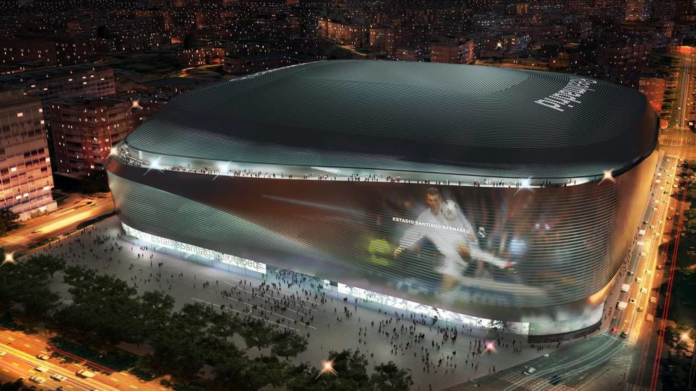

Le stade Santiago Bernabéu (en espagnol : Estadio Santiago Bernabéu) est un stade de football situé à Madrid, Espagne. Inauguré le 14 décembre 1947 et propriété du Real Madrid, sa capacité est depuis 2006 de 81 044 spectateurs. Il se trouve au cœur de la capitale espagnole, sur le Paseo de la Castellana dans le district de Chamartín. Il est desservi par la station de métro du même nom. Initialement connu comme le Nouveau stade Chamartín, il reçoit son nom actuel en 1955 en l'honneur du président du club de l'époque, Santiago Bernabéu1.
La visite touristique du Bernabéu conduit les visiteurs à travers les lieux les plus emblématiques du club et permet de voir le stade sous le même angle que les autorités, c’est-à-dire depuis la loge présidentielle ; ou comme les joueurs, depuis le terrain de jeu; ou encore comme l'entraîneur, assis sur les sièges ergonomiques chauffés de son banc. L’itinéraire passe par le vestiaire des joueurs où peu de gens résistent au plaisir de se faire photographier près du casier de son joueur préféré.
Pour mieux faire connaître l’histoire du Real Madrid, le Tour Bernabéu inclut un passage par l’exposition de trophées et de milliers d’objets de son patrimoine, tels que les maillots, les ballons, les photos et les documents. Mais le lieu n’est pas une simple exposition d’objets car il comporte aussi des écrans interactifs avec des contenus audiovisuels aussi intéressants que ceux de la salle « Meilleur club de l’Histoire » et de la salle baptisée « Sensations Real Madrid », qui font revivre avec beaucoup d’émotion l’histoire de l’équipe.
Le projet Nouveau Santiago Bernabéu, confié à l’équipe d’architectes GMP-L35-Ribas, comprend la construction d’une grande corniche, dans l’entrée principale, en saillie sur le terrain sans appuis au sol, qui se compose d’un grand hall d’entrée de 2 000 mètres carrés, qui donne accès au nouveau stade Bernabéu.
Parmi d’autres aspects importants de la rénovation du stade (qui devrait se terminer à la mi-2021), on remarque la construction de nouveaux gradins côté est, qui seront un peu plus hauts que les actuels, bien que la capacité finale soit de 80 242 sièges (un siège de moins que les actuels), ainsi que la construction d’un toit amovible qui permettra d’utiliser le terrain quelle que soit la météo et de réduire les nuisances sonores.
Résidence du Real Madrid, un des clubs de football les plus prestigieux au monde, le stade a accueilli certains des événements les plus importants du sport mondial, parmi lesquels les finales de la Coupe du monde 1982, de l'Euro 1964 et de la Coupe d'Europe des clubs champions, devenue Ligue des champions, à quatre reprises (1957, 1969, 1980 et 2010).